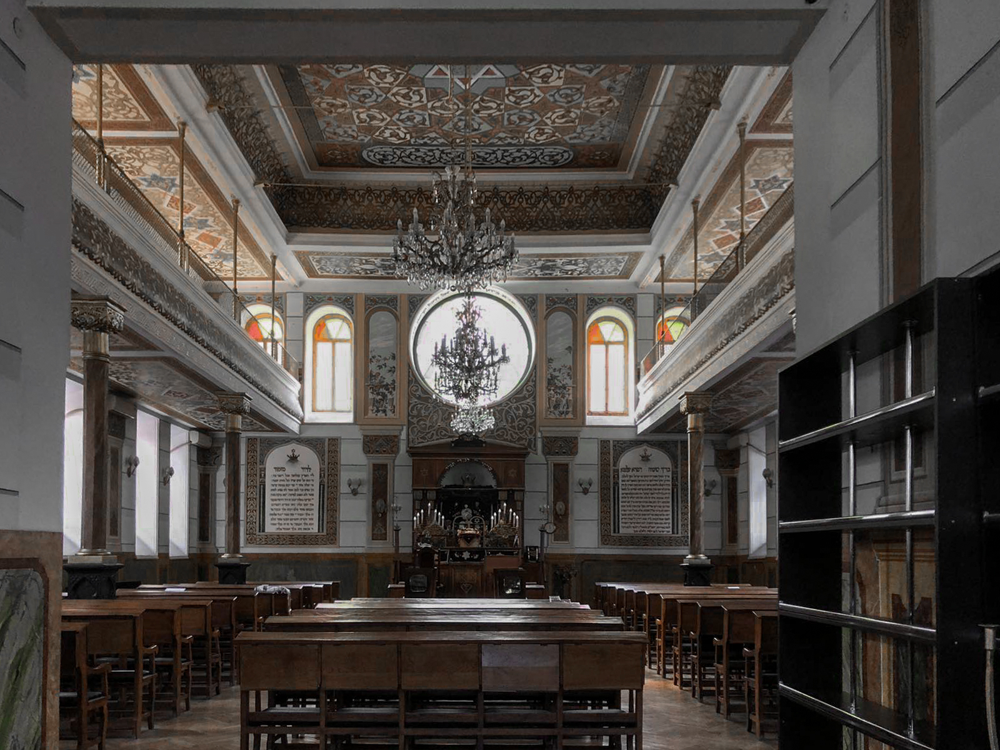

თბილისის დიდი სინაგოგა, ახალციხელების სინაგოგა (ებრ. בית הכנסת הגדול של טביליסי) — მოქმედი სინაგოგა თბილისში, რომელიც 1910 წელს არის აგებული.

თბილისის დიდი სინაგოგა ქალაქ თბილისში, კოტე აფხაზის ქუჩაზე მდებარეობს. იგი აგებულია 1910 წელს. 1909 წელს გაზეთი ”დროება” გვამცნობს:
“ქართველ ებრაელთ თავიანთ სამლოცველოს დამთავრება ტფილისში ძალიან უჭირდებათ, რადგან ასეთ უზარმაზარ შენობას დიდი ფული უნდა.
ნაგებობა იერუსალიმისკენ არის ორიენტირებული გრძივი ღერძით. იგი გეგმით სწორკუთხაა და ნაგებია წითელი აგურით. ორსართულიანი შენობა რთულ რელიეფზე დგას.
ეს დიდი შენობა მთლად ქართველ ებრაელთა წვლილით არის ნაშენი. ევროპიდან ან რუსეთიდან მოსულ ებრაელებს ამათთან კავშირი და მისვლა-მოსვლა არა აქვთ.
სინაგოგის პირველი სართული ოთხ სტრუქტურულ ნაწილადაა დაყოფილი. წინა სივრცე ჰოლია, მარჯვნივ სალოცავის კანტორითა და მარცხნივ კი - სამმარშიანი კიბით, რომელიც მეორე სართულის სალოცავ დარბაზს უკავშირდება.